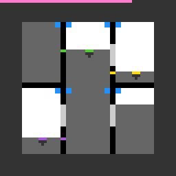

vc33
Click buttons to move liquid between tanks; the level is won when every cursor's liquid is level with its mark.
7 levels · 10 rules · all levels replayed in Lean
Replay
The certified run that cleared every level, one action at a time. Beside each step: the rules of the model that explain it; they are also marked in the rule list below.

Explained by
Press Play or step to load the run. Keys, while the player is on screen: ← → step, Space play / pause. A click is circled; cells that changed are outlined.
How it plays
Black dividers cut the screen into several tanks, and the white is liquid. Blue buttons sit on either side of a divider, each belonging to the tank on its side; a coloured cursor sits at the front of the liquid surface in its tank; coloured marks set into a divider show the depth the cursor of the same colour has to reach. Clicking a button moves one portion of liquid from the tank across the divider into this one; a portion equals the thickness of that divider. If the far tank holds less than a portion, or this tank would overflow, the click does nothing. The light grey segments in a divider are gauges: a gauge lights up when the liquid on both sides is at its starting depth, and clicking a lit gauge sends each of the two cursors to the other side. The level is won when the liquid in each cursor's tank is level with the mark of the same colour and that tank touches the divider that carries the mark. The total amount of liquid never changes, and the height of the walls limits how much a tank holds.

Model
The final model: 9 object types and 10 rules. Each rule is a Python check against every recorded step; 7 of them are translated into Lean (the paper's per-game table). Code under a rule is the file of the same name in the agent's Lean project.
Object types
- Dividers
bandsBlack walls: which lanes they occupy, how thick, and how high they are drawn. - Tanks
zonesThe spaces cut out by dividers that hold liquid. - Buttons
buttonsBlue blocks beside a divider, each belonging to the tank on its side. - Target marks
targetsColoured marks in a divider showing the depth the same-colour cursor must reach. - Gauges
gaugesLight grey segments in a divider with no cursor of the same colour. - Liquid levels
levelsHow deep each tank is filled right now. - Cursors
cursorsSmall coloured handles at the front of the liquid surface in their tank. - Gauge display
gauge_lookWhether each gauge is lit or dark right now. - Top bar
usedThe top row of the screen, counting cells spent this level.
Rules
click_gaugeClicking a lit gauge sends the cursors on each side to the other side.Python
from __future__ import annotations from derive.hit import hit from derive.move import gauge_move from objects import click_of, parse from rule._common import LEVEL_CHANGED, level_changed, same_but … … def scope_(prev, action, nxt, ctx=None): if level_changed(ctx): return LEVEL_CHANGED w = parse(prev) kind, i = hit(w, click_of(prev, action)) if kind != "gauge": … if gauge_move(w, i)[0] is None: … return None def assert_(prev, action, nxt, ctx=None): w, nw = parse(prev), parse(nxt) _kind, i = hit(w, click_of(prev, action)) _why, cs = gauge_move(w, i) return "TRUE" if nw.cursors == cs and same_but(w, nw, "used", "cursors") else "FALSE"Lean · ClickGauge.lean
import Obj.World import Obj.Derive.Layout import Obj.Derive.Gauge import Obj.Derive.Move namespace Game def sendOver (b : Board) (z0 z1 : Nat) (c : Cursor) : Option Cursor := if Nat.beq c.zone z0 || Nat.beq c.zone z1 then let dst := if Nat.beq c.zone z0 then z1 else z0 match nth b.zones dst with | none => none | some z => if Nat.blt z.lanes.size c.width then none else some { c with zone := dst, lane := landLane b dst c.width } else some c def sendAll (b : Board) (z0 z1 : Nat) : List Cursor → Option (List Cursor) | [] => some [] | c :: cs => match sendOver b z0 z1 c, sendAll b z0 z1 cs with | some c', some cs' => some (c' :: cs') | _, _ => none def clickGauge (b : Board) (s : State) (i : Nat) : Option State := match nth b.gauges i with | none => none | some g => match sides b g.band (some g.depths) with | [z0, z1] => if aligned b s i then match sendAll b z0 z1 s.cursors with | none => none | some cs => some { s with cursors := sortC cs } else some s | _ => none end Gameclick_noopClicking outside buttons and gauges changes nothing except the top bar.Python
from __future__ import annotations from derive.hit import hit from objects import click_of, parse from rule._common import LEVEL_CHANGED, NOT_CLICK, is_click, level_changed, same_but … def scope_(prev, action, nxt, ctx=None): if not is_click(action): return NOT_CLICK if level_changed(ctx): return LEVEL_CHANGED kind, _i = hit(parse(prev), click_of(prev, action)) if kind in ("button", "gauge"): … return None def assert_(prev, action, nxt, ctx=None): return "TRUE" if same_but(parse(prev), parse(nxt), "used") else "FALSE"Lean · ClickNoop.lean
import Obj.World namespace Game def clickNoop (s : State) : State := s end Gamewin_alignThe level is won when every cursor's liquid is level with its adjacent mark.Python
from __future__ import annotations import dataclasses from derive.goal import solved from derive.hit import hit from derive.move import gauge_move, press from objects import click_of, parse from rule._common import NOT_CLICK, is_click, level_changed … def after(w, prev, action): kind, i = hit(w, click_of(prev, action)) if kind == "button": why, lv = press(w, i) return None if why is None else dataclasses.replace(w, levels=lv) if kind == "gauge": why, cs = gauge_move(w, i) return None if why is None else dataclasses.replace(w, cursors=cs) return w def scope_(prev, action, nxt, ctx=None): if not is_click(action): return NOT_CLICK a = after(parse(prev), prev, action) if a is None or solved(a) is None: … return None def assert_(prev, action, nxt, ctx=None): a = after(parse(prev), prev, action) return "TRUE" if bool(solved(a)) == level_changed(ctx) else "FALSE"Lean · WinAlign.lean
import Obj.World import Obj.Derive.Layout import Obj.Derive.Goal namespace Game def pairOK (b : Board) (s : State) (p : Cursor × Target) : Bool := Nat.beq (getN s.levels p.1.zone) p.2.depths.lo && memN p.1.zone (sides b p.2.band none) def isGoal (b : Board) (s : State) : Bool := !(pairs b s.cursors).isEmpty && (pairs b s.cursors).all (pairOK b s) end Gameboard_staticWithin a level, the layout never changes.Python
from __future__ import annotations from objects import parse from rule._common import LEVEL_CHANGED, level_changed … BOARD = ("bands", "zones", "buttons", "targets", "gauges") def scope_(prev, action, nxt, ctx=None): if level_changed(ctx): return LEVEL_CHANGED return None def assert_(prev, action, nxt, ctx=None): w, nw = parse(prev), parse(nxt) return "TRUE" if all(getattr(w, f) == getattr(nw, f) for f in BOARD) else "FALSE"Lean · BoardStatic.lean
import Obj.World import Step namespace Game theorem board_static (b : Board) (s : State) (a : Act) (as : List Act) : everWon b s (a :: as) = (match step b s a with | .won => true | .ok s' => everWon b s' as | .na => false) := rfl end Gameflow_conservedA click leaves the total liquid in all tanks unchanged.Lean · FlowConserved.lean
import Obj.World import Step import Derived.Idx import Derived.StepFacts namespace Game theorem pressWith_sum (b : Board) (s s' : State) (gain lose st : Nat) (h : pressWith b s gain lose st = some s') : sumL s'.levels = sumL s.levels := by unfold pressWith at h split at h · cases h rename_i h1 split at h · cases h rename_i h2 split at h · cases h rename_i h3 split at h · cases h; rfl rename_i h4 split at h · cases h; rfl rename_i h5 cases h show sumL (bump (bump s.levels gain (· + st)) lose (· - st)) = sumL s.levels have hl1 : lose < (bump s.levels gain (· + st)).length := by rw [bump_length]; omega have e2 := sumL_bump (bump s.levels gain (· + st)) lose (· - st) hl1 have e1 := sumL_bump s.levels gain (· + st) (by omega) have g2 : getN (bump s.levels gain (· + st)) lose = getN s.levels lose := getN_bump_ne s.levels gain lose (· + st) (fun e => h1 e.symm) rw [g2] at e2 try simp only at e1 e2 omega theorem pressButton_sum (b : Board) (s s' : State) (i : Nat) (h : pressButton b s i = some s') : sumL s'.levels = sumL s.levels := by unfold pressButton at h split at h · cases h · exact pressWith_sum b s s' _ _ _ h theorem clickGauge_levels (b : Board) (s s' : State) (i : Nat) (h : clickGauge b s i = some s') : s'.levels = s.levels := by unfold clickGauge at h split at h · cases h · split at h · split at h · split at h · cases h · cases h; rfl · cases h; rfl · cases h theorem pre_sum (b : Board) (s s' : State) (a : Act) (h : pre b s a = some s') : sumL s'.levels = sumL s.levels := by rcases pre_cases b s s' a h with e | ⟨i, hp⟩ | ⟨i, hg⟩ · rw [e] · exact pressButton_sum b s s' i hp · rw [clickGauge_levels b s s' i hg] theorem flow_conserved (b : Board) (s s' : State) (a : Act) (h : step b s a = .ok s') : sumL s'.levels = sumL s.levels := pre_sum b s s' a (step_ok_pre b s s' a h) end Gametank_capThe liquid level never exceeds a tank's capacity.Lean · TankCap.lean
import Obj.World import Step import Derived.Idx import Derived.StepFacts import Derived.FlowConserved namespace Game def CapOK (b : Board) (s : State) : Prop := ∀ k, k < s.levels.length → getN s.levels k ≤ capacity b k theorem pressWith_cap (b : Board) (s s' : State) (gain lose st : Nat) (hc : CapOK b s) (h : pressWith b s gain lose st = some s') : CapOK b s' := by unfold pressWith at h split at h · cases h rename_i h1 split at h · cases h rename_i h2 split at h · cases h rename_i h3 split at h · cases h; exact hc rename_i h4 split at h · cases h; exact hc rename_i h5 cases h intro k hk show getN (bump (bump s.levels gain (· + st)) lose (· - st)) k ≤ capacity b k have len1 : (bump s.levels gain (· + st)).length = s.levels.length := bump_length _ _ _ have hk' : k < s.levels.length := by have : (bump (bump s.levels gain (· + st)) lose (· - st)).length = s.levels.length := by rw [bump_length, len1] simp only at hk omega by_cases hkl : k = lose · subst hkl rw [getN_bump_eq _ _ _ (by rw [len1]; omega), getN_bump_ne s.levels gain k (· + st) (fun e => h1 e.symm)] have := hc k hk' try simp only omega · rw [getN_bump_ne _ lose k _ hkl] by_cases hkg : k = gain · subst hkg rw [getN_bump_eq _ _ _ hk'] try simp only omega · rw [getN_bump_ne _ gain k _ hkg] exact hc k hk' theorem pressButton_cap (b : Board) (s s' : State) (i : Nat) (hc : CapOK b s) (h : pressButton b s i = some s') : CapOK b s' := by unfold pressButton at h split at h · cases h · exact pressWith_cap b s s' _ _ _ hc h theorem pre_cap (b : Board) (s s' : State) (a : Act) (hc : CapOK b s) (h : pre b s a = some s') : CapOK b s' := by rcases pre_cases b s s' a h with e | ⟨i, hp⟩ | ⟨i, hg⟩ · rw [e]; exact hc · exact pressButton_cap b s s' i hc hp · have e := clickGauge_levels b s s' i hg intro k hk rw [e] at hk ⊢ exact hc k hk theorem tank_cap (b : Board) (s s' : State) (a : Act) (hc : CapOK b s) (h : step b s a = .ok s') : CapOK b s' := pre_cap b s s' a hc (step_ok_pre b s s' a h) end Gamehud_costEach click raises the top bar by zero to two cells, never lowering it.Python onlyPython
from __future__ import annotations from objects import parse from rule._common import NOT_CLICK, is_click, level_changed … MAX_JUMP = 2 def scope_(prev, action, nxt, ctx=None): if not is_click(action): return NOT_CLICK return None def assert_(prev, action, nxt, ctx=None): a, b = parse(prev).used, parse(nxt).used if level_changed(ctx) and (ctx or {}).get("state_next") != "WIN": return "TRUE" if b == 0 else "FALSE" return "TRUE" if a <= b <= a + MAX_JUMP else "FALSE"gauge_signalA gauge changes colour only on the step it flips between lit and dark.Python onlyPython
from __future__ import annotations from derive.gauge import aligned from objects import parse from rule._common import LEVEL_CHANGED, NOT_CLICK, is_click, level_changed … def scope_(prev, action, nxt, ctx=None): if not is_click(action): return NOT_CLICK if level_changed(ctx): return LEVEL_CHANGED if not parse(prev).gauges: … return None def assert_(prev, action, nxt, ctx=None): w, nw = parse(prev), parse(nxt) if len(w.gauges) != len(nw.gauges): return "FALSE" for i in range(len(w.gauges)): flipped = aligned(w, i) != aligned(nw, i) changed = w.gauge_look[i] != nw.gauge_look[i] if flipped != changed: return "FALSE" return "TRUE"restart_is_level_startRestarting returns to this level's opening screen.Python
from __future__ import annotations from objects import parse from rule._common import level_changed … def scope_(prev, action, nxt, ctx=None): ctx = ctx or {} is_reset = action == "RESET" if not is_reset and not level_changed(ctx): … if ctx.get("state_next") == "WIN": … if ctx.get("level_start") is None: … return None def assert_(prev, action, nxt, ctx=None): nw, st = parse(nxt), parse(ctx["level_start"]) import dataclasses return "TRUE" if dataclasses.replace(nw, used=st.used) == st else "FALSE"Lean · L0.lean
import Obj.World import Step import Obs.Check import Obs.Replay import Proof.Reachable namespace Game namespace Levels set_option maxRecDepth 100000 def L0_board : Board := Replay.boardOf 372 def L0_start : State := Replay.preOf 372 def L0_play : List (Act × State) := Replay.playFrom 372 2 def L0_acts : List Act := L0_play.map Prod.fst ++ [Replay.actOf 374] … … theorem L0_trace : traceOk step L0_board L0_start L0_play = true := by decide +kernel theorem L0_walked : walked step L0_board L0_start L0_play = 2 := by decide +kernel theorem L0_winnable : Winnable (World.mk L0_board L0_start) := ⟨L0_acts, by decide +kernel, by decide +kernel⟩ def L0_after_reset_203 : List (Act × State) := Replay.playFrom 204 2 theorem L0_after_reset_203_trace : traceOk step L0_board L0_start L0_after_reset_203 = true := by decide +kernel theorem L0_after_reset_203_walked : walked step L0_board L0_start L0_after_reset_203 = 2 := by decide +kernel end Levels end Game
Code is shown with comments and the agent's notes removed; the files as written are in the archive under Check it yourself.
Proof
For every level, Lean starts from the level's first screen, applies the model's rules to the certified actions, and checks that every computed state agrees with the recorded frame on the components the model represents, and that the last one wins. Each theorem is closed by the Lean kernel and is a statement about the learned model.
Every level can be won
theorem L0_winnable : Winnable (World.mk L0_board L0_start) := …theorem L1_winnable : Winnable (World.mk L1_board L1_start) := …theorem L2_winnable : Winnable (World.mk L2_board L2_start) := …theorem L3_winnable : Winnable (World.mk L3_board L3_start) := …theorem L4_winnable : Winnable (World.mk L4_board L4_start) := …theorem L5_winnable : Winnable (World.mk L5_board L5_start) := …theorem L6_winnable : Winnable (World.mk L6_board L6_start) := …theorem residue_ctrl_winnable : Winnable (World.mk L0_board L0_start) := …theorem capacity_ctrl_winnable : Winnable (World.mk L0_board L0_start) := …What cannot be won under the model
theorem cap_no_win (b : Board) (s0 : State) (hk : capKey b s0 = true) :
∀ s a, CapOK b s → step b s a ≠ Res.won := …theorem unsolvable_by_capacity (b : Board) (s0 : State) (hk : capKey b s0 = true) :
Unsolvable (World.mk b s0) := …theorem res_no_win (b : Board) (T : Nat) (s0 : State) (hk : resKey b T s0 = true) :
∀ s a, ResP T s0 s → step b s a ≠ Res.won := …theorem unsolvable_by_residue (b : Board) (T : Nat) (s0 : State) (hk : resKey b T s0 = true) :
Unsolvable (World.mk b s0) := …theorem residue_scene_unsolvable : Unsolvable (World.mk residueBoard L0_start) := …theorem capacity_scene_unsolvable : Unsolvable (World.mk capacityBoard L0_start) := …Statements only; the proofs and the full Lean project are in the archive, with the steps to re-run them, under Check it yourself.
Check it yourself
Everything on this page comes from files you can download and check. The archive holds the agent's files: the recorded run, the concept book, the concept sources, the Lean project and the sealed model file, plus the record of our kernel check.
Download vc33.zip 0.3 MB · 66 files
Re-run the proof
Before you start: our run of this check took 30 s and 1.7 GB of memory at its peak (2026-10-24).
- Download vc33.zip and unpack it. The model and its theorems are in
archive/vc33-20260907/formal/Game.lean. Before changing it, check that its SHA-256 isec86c7e7a0defa0beca57d5f261704bc1770d7ce0f7553acc3f6c0ddb793afd2 - Install Lean with elan, then the version named in the archive's
lean-toolchain:elan toolchain install leanprover/lean4:v4.34.0 - Copy the model file to
Check.leanand append these two lines to the copy:#print axioms consistent #print axioms faithful - In the folder that holds
Check.lean, run:lean +leanprover/lean4:v4.34.0 -M60000 Check.lean - Lean should finish without errors and print:
'consistent' depends on axioms: [propext] 'faithful' depends on axioms: [propext]
What a pass establishes
consistent: for every recorded transition, as read by the agent's parser and with duplicates removed, every rule whose condition holds also has its effect hold. faithful: the certified run, recomputed step by step from the first screen of each level, matches the record and ends in a win. Axioms used: propext, all among Lean's standard ones.
What it does not establish: that the parser reads the screens correctly (that step runs in Python, outside Lean), or that a rule whose condition never occurs in the record is right. The Python file that produced the readings inside the model file is in the archive at meta/repair-20260928/lib/vc33-20260907/_lib.py.